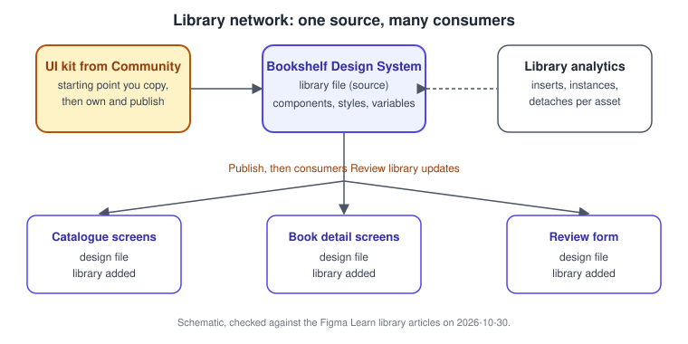
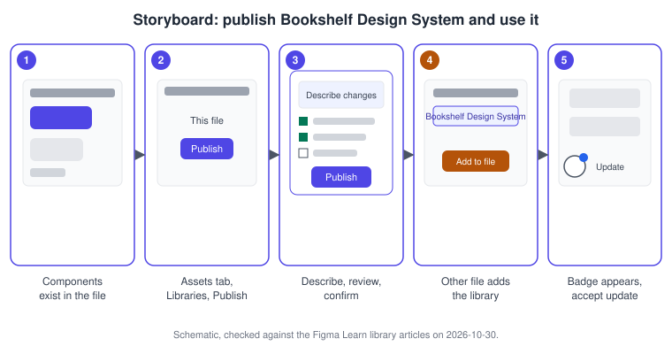
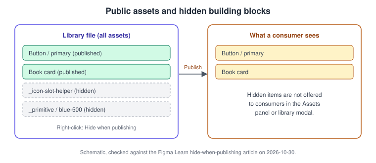
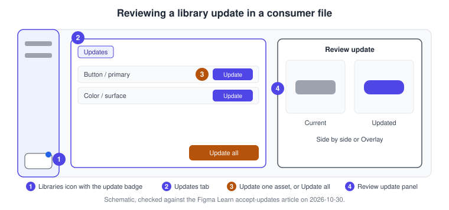
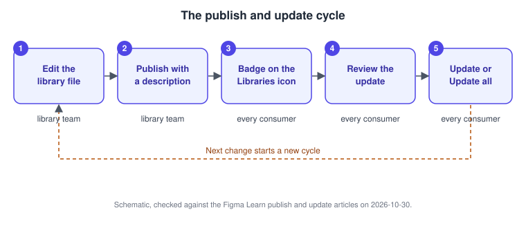

Libraries and Publishing
|
This content was generated with the assistance of AI and should be verified against the official documentation before being relied on in production. |
This page was written on 2026-10-30 against the UI3 interface of Figma Design. Publishing and using team libraries is available on the Professional, Education, Organization, Government and Enterprise plans; the Starter plan can create components, styles and variables but cannot publish them as a library. Publishing needs edit access to the source file, which in practice means a Full seat, and using a library in another file needs at least view access to the library file. Organization and Enterprise plans add a choice of destination (a team or the whole organization, and workspaces on Enterprise) and library analytics. Libraries are generally available. Plan names are described on Plans, Seats and AI Credits; the exact limits change over time, so check the plan comparison page before relying on them.
The running example is the Bookshelf Design System: one library file with the button, input, rating stars, book card, top bar and tab bar components, the colour, spacing and radius variables and the text and effect styles. Three other files (catalogue screens, book detail screens and the review form) consume it. A library is not a special kind of file. Any design file that contains at least one component, style or variable can be published, and once published its assets appear in the Assets tab of every file that has added it. The assets themselves are explained on Components and Instances, Variants and Component Properties and Variables, Collections and Modes; planning the system around them continues on Design Systems.
The model
-
Library file: the design file that owns the main components, styles and variables. It is edited by the design-system team.
-
Publish: copies the current state of the selected assets, with a description, to the place where other people can find them. Nothing reaches consumers until you publish.
-
Consumer file: a design file that has added the library. Its instances stay linked to their main components.
-
Update: a published change waiting in a consumer file. It is applied only when someone in that file accepts it.
-
Library analytics: usage numbers per library and per asset.

Source: Figma Learn: Publish a library
Where it lives in UI3 and the shortcuts
In the editor, library features sit in the Assets tab of the left sidebar and on the Libraries icon next to it. The tooltip of the icon reads "Review library updates" when libraries used by the file have updates, and "Review unpublished changes" when the library file has changes that were not published. A blue badge on the icon marks updates for consumers. In the right sidebar, an instance with a pending update shows an "Update available" action in the Design tab. Library analytics for a single library are opened from the menu next to the file name; organization-wide totals are in the file browser. The overall layout is described on Interface Tour.
| Action | macOS | Windows |
|---|---|---|
Open the Assets panel |
Option 2 |
Alt 2 |
Open the Actions menu to search commands |
Command K |
Ctrl K |
There is no dedicated shortcut for publishing; use the Libraries modal. The Assets shortcut above is the one listed in the keyboard shortcut documentation at the time of writing.
Source: Figma Learn: Publish a library
Publish a library
When you publish, Figma lists the assets that were added, modified or removed since the last publish and lets you uncheck the ones you do not want to ship yet. The description you write is stored with the publish, shown when consumers accept the update and visible in the version history of the file, so it is the changelog of your design system. Write what changed and why, for example "Button: ghost variant added, focus ring now uses color/focus".
A file in Drafts cannot be published; move it to a folder (see Files, Folders, Teams and Sharing). If the sharing settings of the file are too restrictive, Figma asks you to loosen them, for example from invited people only to everyone in the organization, because people who cannot open the file cannot use its assets.
-
Open the Bookshelf Design System file and check that the components, variables and styles are named the way consumers should see them.
-
Select the Assets tab in the left sidebar and click the Libraries icon.
-
Under This file, click Publish.
-
On Organization and Enterprise plans, choose the destination (a team, the organization or, on Enterprise, a workspace).
-
Type a description such as "First release: button, input, rating stars, book card, tokens".
-
Review the list of added assets, uncheck anything unfinished, and click Publish to confirm.

Source: Figma Learn: Publish a library
Hide assets when publishing
Some assets are building blocks that consumers should not use directly: a helper component for a slot, a primitive colour such as blue-500 that only semantic variables should reference, or a half-finished experiment. Right-click the asset in the library modal and choose "Hide when publishing"; choose "Show when publishing" to undo it. Hidden assets are not offered to consumers in the Assets panel. A common convention, which is a team habit and not a Figma feature, is to start the names of private components with an underscore or a full stop so they are easy to spot.
-
Open the Libraries modal in the Bookshelf Design System file.
-
Find the primitive colour variables or helper components.
-
Right-click each one and choose Hide when publishing.
-
Publish again with a description such as "Primitives hidden; use semantic tokens".

Add and remove a library in a file
A library must be published before another file can use it. In the consumer file, open the Assets tab, click the Libraries icon, search for the library or browse the tabs (Recommended, your teams, your organization and, when available, UI kits), select it and click "Add to file". To remove it, right-click the library in the same modal and choose "Remove library from file". Adding or removing a library affects everyone who has access to the file, and assets already placed on the canvas stay where they are.
The documentation does not describe a "swap library" command in that article. Swapping a whole design system for another (for example from a Community kit to the Bookshelf Design System) is therefore a manual job: add the new library, replace instances (instance swap, covered on Components and Instances) and then remove the old one. Whether swapped instances keep their overrides depends on matching property names, so test it on a copy of the file first. Organization admins can also decide which libraries are enabled by default for teams; see the sharing article below.
-
Open the Catalogue screens file.
-
Select the Assets tab, click the Libraries icon and search for "Bookshelf Design System".
-
Click the library and then Add to file, and close the modal.
-
Drag the Button / primary component from the Assets tab onto a frame.
Review and accept updates
After a publish, every consumer file shows the blue badge on the Libraries icon. Updates are applied only when someone accepts them, so a release never changes a file under your hands. There are two ways to accept.
-
From the file: click Review library updates, open the Updates tab (it shows the current page by default; turn on "Show updates for all pages" for the whole file) and click Update next to one asset or Update all.
-
From the canvas: select an instance (or a layer that uses a style or variable with an update), click "Update available" in the Design tab of the right sidebar, and choose either to update the selected instance directly or to review the update first.
The review view opens side by side by default; Overlay places the updated item over the current one with an opacity slider, and arrows step through the instances in the file. Changes to hidden layers inside a component cannot be compared visually. The documentation does not describe an explicit "skip" option; an update simply stays pending until you apply it.
-
Open Catalogue screens and look for the blue badge on the Libraries icon.
-
Click Review library updates and open the Updates tab.
-
Read the publish description, then click Update next to Button, or choose Review update from an instance first.
-
In the review view, switch between Side by side and Overlay and step through the instances.
-
Click Update all once the new button looks right on every screen.

The publish and update cycle
Putting the pieces together, a design system lives in a loop: change the library file, publish with a description, let consumers see the badge, let them review, and let them accept. Releases are small and frequent when the descriptions are good, and the loop is the same whether the library has three consumers or three hundred. Published changes can be checked against the version history of the library file (see Version History and Branching).

Source: Figma Learn: Publish a library
Library analytics
Library analytics show how a published library is used: totals per library, and per component, style or variable the number of instances, the teams and files that use it, and insertions. Data is refreshed daily and covers up to one year; style and variable tracking began in October 2024. For one library, open the library file, use the menu next to the file name and choose Library analytics; the modal has Overview and Analytics tabs with filters for the asset type and a period of 30, 60 or 90 days or a year. A component counts as inserted when someone pastes or duplicates an instance, drags it from the Assets panel, swaps an instance or adds content to a slot; detaches are recorded separately. Nested components are not counted as insertions, usage in other people’s draft files is not tracked, and you only see files in teams you can access. Which plans include analytics should be checked in the plan comparison, because the article describes it for organizations.
-
Open the Bookshelf Design System file and choose Library analytics from the menu next to the file name.
-
Open the Analytics tab and set the period to 90 days.
-
Filter by components and sort by instances.
-
Open the weakest component and look at which files use it; plan a deprecation or a redesign on Design Systems.
Community and UI kits
The Figma Community hosts free and paid files, including UI kits and design-system starting points such as the Simple Design System and Material 3 and Apple platform kits published by their owners. Treat them as a starting point you duplicate, rename, adapt and publish as your own library, not as something that updates itself. Check each file’s licence and publisher on its Community page. Material 3 and Apple’s interface guidelines are described on Compose Material 3 and Theming and Human Interface Guidelines. Community resources and plugins continue on Using Plugins and Widgets. Where UI kits are available to you, they also appear as a tab in the Libraries modal.
Common mistakes
-
Editing the library and forgetting to publish: consumers see nothing, and the Libraries icon says "Review unpublished changes".
-
Publishing a file that lives in Drafts, or with sharing settings that block consumers.
-
Publishing without a useful description, which leaves consumers guessing what an update changes.
-
Leaving primitive tokens and helper components visible, so designers use them directly.
-
Removing a library and expecting the assets on the canvas to disappear; they stay.
-
Pressing Update all without reviewing a visual change on every screen.
Where older guides are outdated
Books and tutorials written before 2026 describe the old interface (UI2), where libraries were opened from a Resources or Assets toolbar button; UI3 has been the only interface since 2025-04-30, and the left navigation bar changed again on 2026-01-07. They also use the seat names editor and viewer and the "Paid Team plan" wording, which were replaced by Full, Dev, Collab and View seats on 2025-03-11. Projects were renamed folders on 2026-08-03. Older guides also predate slots, animated components and Check designs in components, and they treat styles as the only way to store design tokens, although variables have been generally available since 2024-04-16. Source: Figma release notes